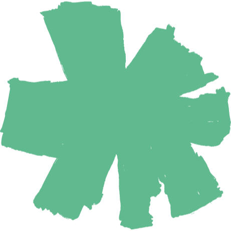
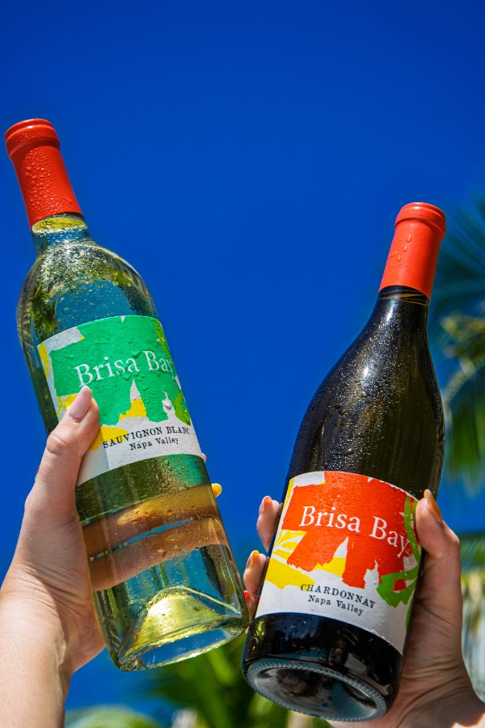
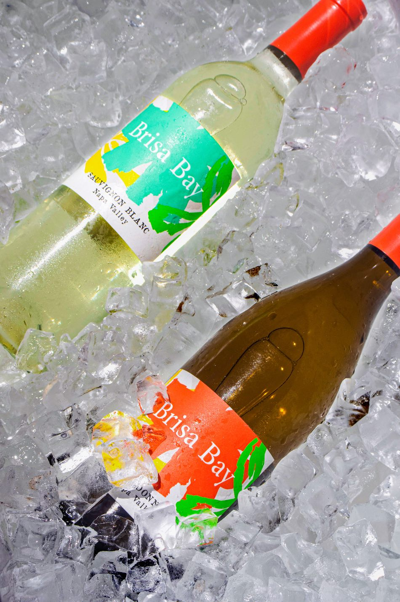
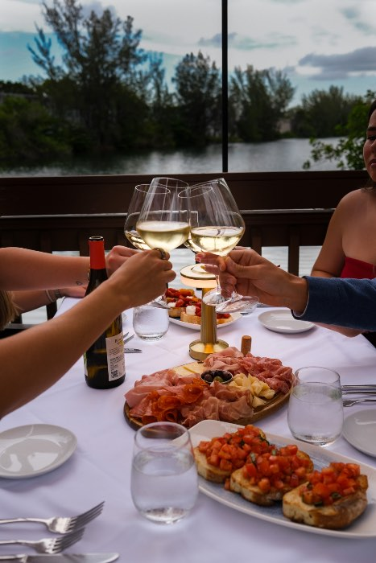
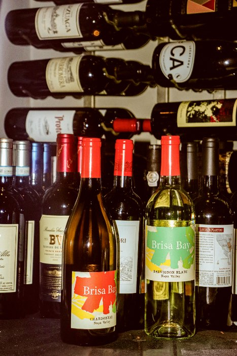

We've always believed that certain places have a soul of their own: the power to bring back a memory, shift your mood, or simply ground you in the present. For us, that place is right at the edge of the San Pablo Bay.
This is where our family spent years learning the craft, living among the vineyards in the heart of Napa Valley. Watching the morning mist lift and feeling that cool wind sweep through the valley wasn't just a weather pattern; it was a revelation. We called it brisa (the word for breeze in Spanish) because that wind became our blueprint: a quiet reminder that wine doesn't need to be complicated. Just fresh, alive, and moving.



Forget the calendar milestones. Great wine is for the spontaneous moments, Opened just because the sun is out, the music is good, or simply because you're together.

Shaped by the cool winds of San Pablo Bay, we show a brighter side of Napa Valley. No heavy flavors here; just crisp, light, and refreshing wine full of life.

This wine isn't meant for a dark cellar or silent analysis. It's a bridge between people: the perfect excuse for a long lunch that rolls right into dinner with friends.

We've stripped away the complex terminology and unwritten rules. No pretense, no pressure, just great Napa wine made to let you focus entirely on the moment.
The short answers. For anything else, just write to us.
{{ item.a }}
Still curious? Email info@brisabay.com.
Before you come in, please confirm you are of legal drinking age — 21 or older in the United States.
We never sell or market alcohol to anyone under the legal drinking age. Please enjoy Brisa Bay responsibly.
Thanks for stopping by. There's a bottle waiting for you when the time is right.